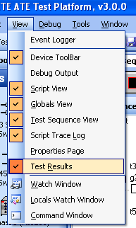

By default, the Test Results window is docked behind the Script Trace Log window in the bottom right corner of the IDE. The Test Results window is visible by default, but it can be toggled from the View menu (View -> Results). After a test is run, the results are displayed in a table within the Test Results window.
|  | Click Results from the View menu to toggle the visibility of the Test Results window. |
 |
Sample test data. |
The data for all tests that were run is displayed as shown above. By default, the tests are sorted in the order they are run in with the first row corresponding to the first test. Click on a column header to sort by that column. Failed tests are marked in red to easily distinguish them from tests that passed. The Test Name is the full path of the test node which includes its parent groups. The remaining columns are described in detail in Test result properties of test nodes.
Astronics Test Systems
Last updated on 2/28/07 by L. Anhalt